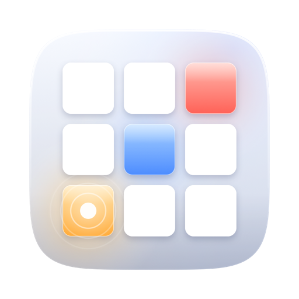

One shortcut to perform
⇧⌘E summons the pad window on top of everything — even mid-session in your DAW. Press it again and the show ends, every note cleanly off.
Free · Open source · macOS
Forchpad turns your Mac's Force Touch trackpad into a grid of MIDI pads. Press one shortcut and every finger plays a note — straight into your DAW.
Go ahead — tap the pads. They sound here, too.
Features
⇧⌘E summons the pad window on top of everything — even mid-session in your DAW. Press it again and the show ends, every note cleanly off.
Your DAW sees a virtual input named Forchpad — channel 10, notes from 36 up, ready-made for drums. No drivers, no setup.
While you play, the pointer freezes and hides, so no stray click can land mid-performance. ⇧⌘P pauses the music and hands it back.
3×3 out of the box, up to 10×10. Rows, columns, MIDI channel, base note, velocity, per-pad colors — all yours in Settings.
No Dock icon, no clutter. A quiet F waits in your menu bar until the moment you need it.
English · 简体中文 · 繁體中文 · 日本語 · 한국어 · Français · Español · العربية
Switch instantly in Settings — it even defaults to your system language.
How it works
Pick your trackpad, grid size and MIDI values in Settings. The built-in trackpad is the default; external Magic Trackpads welcome.
The pad window appears above everything. It can't be closed by accident — only the shortcut ends the show.
Every finger lights a pad and plays a note. Two fingers on one pad are still one note; lift everything and silence returns.
A 125 Hz engine edge-detects pads going down and up, sending clean Note On and Off — no stuck notes, ever.
Before you play
Built into MacBooks from 2015 on, or a Magic Trackpad 2 or newer — built-in or external, your call.
macOS 12+ on Apple Silicon, macOS 13+ on Intel. Touch capture uses a private framework, so a macOS update could break it — it would fail with a clear message, never a crash.
Only needed to pause the pointer while you play. Prefer to keep your pointer? Turn the pause off in Settings — no permission asked, touches simply drive the pointer too.
Mission Control and friends belong to macOS and can't be blocked reliably. If they interrupt your groove, disable them in System Settings → Trackpad.

Free and open source under the MIT license. One universal binary for Apple Silicon and Intel.
CI builds are ad-hoc signed: on first launch, right-click → Open, and macOS will let it run.